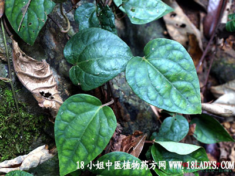

海风藤(木通科)
别名：木通。
植物名：木通。
生长环境：本品为扳援灌木。野生于山坡、岩石阴湿处。常缠绕其他灌木或乔木上升。
分布：江苏、湖南、广东产于北部乳源、英德等果山区。
入药部分：茎藤。
采集期：不拘时。
采购地点：从药材公司购入。
性味道：性温、味苦、气微香。
功能：行气活血，消肿散瘀。
主治、用量和用法：1、产后风：干用5钱至1两，清水煎服；2、产后瘀痛，配伍用；3、风湿关节痛；4、腰刺，均配伍用。
验方：(治产后瘀痛方)海风藤1两、独脚球5钱、益母草5钱、清水三碗，煎成一碗服。
方解：本方海风藤行气活血，独脚球祛风散瘀，益母草去瘀生新。对产后恶露不行而致腹中疼痛者，尚为适合。
方歌：产后瘀痛不行，脚球益母海风藤，气行瘀散血得活，腹中疼痛效如神。